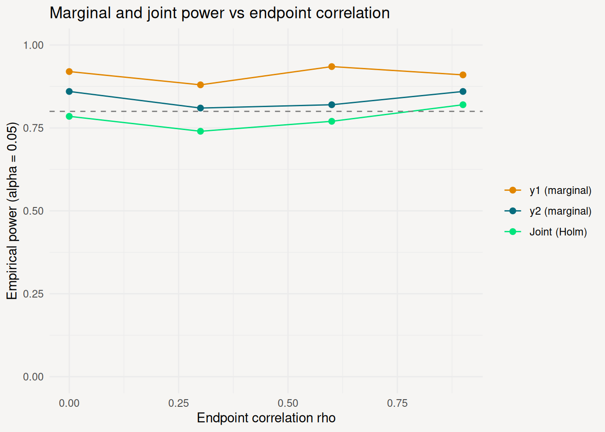

# Core package that provides Timer, Population, Trial, deterministic_schedule, add_timepoints, ...
library(rxsim)
# Utilities
library(dplyr)
library(MASS) # for mvrnorm (simulate correlated endpoints)
library(ggplot2)Example 2: Two arm | Fixed design | Two correlated continuous endpoints | t-test
two-arm
fixed design
continuous
correlated endpoints
multiplicity
t-test
Correlated endpoints via
MASS::mvrnorm, Holm correction, joint vs marginal rejection rates as correlation varies.
Many trials evaluate co-primary or key secondary endpoints simultaneously. Ignoring endpoint correlation when planning a study leads to incorrect power estimates. This example shows how to simulate two correlated continuous endpoints (e.g., a primary efficacy score and a key secondary biomarker) and apply multiplicity adjustment via Holm’s procedure. See Example 1 for the simpler single-endpoint baseline.
Unique focus: correlated endpoints via MASS::mvrnorm, Holm correction, joint vs marginal rejection rates as correlation varies.
Common scaffolding (packages, scenario declaration, and replicate_trial() pattern) follows Example 1; this vignette only expands the parts that change for correlated multi-endpoint analyses.
Scenario
We consider a two-arm, fixed design with two correlated continuous endpoints per subject. A single analysis fires at full enrollment.
# Total target sample size
sample_size <- 100
# Arms and allocation (balanced)
arms <- c("pbo", "trt")
allocation <- c(1, 1)
# Endpoint model parameters
# Endpoint correlation structure (common across arms for simplicity)
rho <- 0.60 # correlation between endpoint1 and endpoint2
sd1 <- 1.00 # SD of endpoint1
sd2 <- 1.00 # SD of endpoint2
# Mean structure per arm
mu1_pbo <- 0.00 # Control mean for endpoint1
mu2_pbo <- 0.00 # Control mean for endpoint2
# Treatment effects (mean shifts)
delta1 <- 0.65 # Treatment - control difference for endpoint1
delta2 <- 0.60 # Treatment - control difference for endpoint2
mu1_trt <- mu1_pbo + delta1
mu2_trt <- mu2_pbo + delta2
# Construct covariance matrix
Sigma <- matrix(
c(sd1^2, rho*sd1*sd2,
rho*sd1*sd2, sd2^2),
nrow = 2, byrow = TRUE
)
scenario <- tidyr::expand_grid(
sample_size = sample_size,
allocation = list(allocation),
rho = rho,
delta1 = delta1,
delta2 = delta2
)
enrollment_fn <- function(n) c(1, rep(0, n - 1)) # all enroll at t = 1 (single look)
dropout_fn <- function(n) rep(0, n) # no dropoutrho = 0.60 represents a moderate positive correlation between the two endpoints - plausible when both reflect the same underlying biological process. The covariance matrix Sigma is constructed from the marginal SDs and correlation using the standard identity cov(y1, y2) = rho × sd1 × sd2. Treatment shifts are delta1 = 0.65 SD for the primary endpoint and delta2 = 0.60 SD for the secondary, reflecting a scenario where the primary endpoint is more sensitive to treatment.
Populations
For each arm we simulate two correlated endpoints per subject using MASS::mvrnorm. In this vignette, that arm-specific generator is the custom data generating model for endpoint behavior.
Correlated endpoint population generators for placebo and treatment arms
# Create closure to capture parameters
mk_population_generator <- function(mu_y1, mu_y2) {
function(n) {
xy <- MASS::mvrnorm(
n = n,
mu = c(mu_y1, mu_y2),
Sigma = Sigma
)
data.frame(
id = seq_len(n),
y1 = xy[, 1],
y2 = xy[, 2],
readout_time = 1
)
}
}
population_generators <- list(
pbo = mk_population_generator(mu1_pbo, mu2_pbo),
trt = mk_population_generator(mu1_trt, mu2_trt)
)MASS::mvrnorm draws n samples from a multivariate normal with the given mean vector and covariance matrix Sigma. The closure pattern (mk_population_generator) captures the arm-specific means at definition time, so each call to population_generators$pbo(n) or population_generators$trt(n) produces data under the correct arm parameters. Endpoint correlation flows entirely through the shared Sigma matrix - changing rho in the scenario automatically updates both arms.
Conditions
This is a fixed design: perform analysis once. We run two independent two-sample t-tests (one per endpoint).
analysis_generators <- list(
final = list(
trigger = enroll_trigger(1.0, sample_size),
analysis = function(df, current_time) {
df_e <- df |> subset(!is.na(enroll_time))
p1 <- t.test(y1 ~ arm, data = df_e)$p.value
p2 <- t.test(y2 ~ arm, data = df_e)$p.value
padj <- p.adjust(c(p1, p2), method = "holm")
data.frame(
scenario,
p_y1 = unname(p1),
p_y2 = unname(p2),
p_holm_y1 = unname(padj[1]),
p_holm_y2 = unname(padj[2]),
n_total = nrow(df_e),
n_pbo = sum(df_e$arm == "pbo"),
n_trt = sum(df_e$arm == "trt"),
stringsAsFactors = FALSE
)
}
)
)The two t-tests are run independently on the enrolled subset, producing unadjusted p-values p_y1 and p_y2. p.adjust(..., method = "holm") applies Holm’s stepwise procedure. padj[1] and padj[2] stay in endpoint order (y1, y2) and account for familywise error across both endpoints, so each adjusted value is never smaller than its unadjusted counterpart.
Simulate
set.seed(3)
trials <- replicate_trial(
trial_name = "two_endpoints_fixed_design",
sample_size = sample_size,
arms = arms,
allocation = allocation,
enrollment = enrollment_fn,
dropout = dropout_fn,
analysis_generators = analysis_generators,
population_generators = population_generators,
n = 5
)
run_trials(trials)Results
One row per replicate, row-bound across all replicates:
replicate_results <- collect_results(trials)
replicate_results
#> replicate timepoint analysis sample_size allocation rho delta1 delta2
#> 1 1 1 final 100 1, 1 0.6 0.65 0.6
#> 2 2 1 final 100 1, 1 0.6 0.65 0.6
#> 3 3 1 final 100 1, 1 0.6 0.65 0.6
#> 4 4 1 final 100 1, 1 0.6 0.65 0.6
#> 5 5 1 final 100 1, 1 0.6 0.65 0.6
#> p_y1 p_y2 p_holm_y1 p_holm_y2 n_total n_pbo n_trt
#> 1 0.0124308283 0.0040835516 0.0124308283 0.0081671031 100 50 50
#> 2 0.0004893202 0.0155346091 0.0009786403 0.0155346091 100 50 50
#> 3 0.1535521204 0.3785221668 0.3071042409 0.3785221668 100 50 50
#> 4 0.0148749288 0.0001891912 0.0148749288 0.0003783823 100 50 50
#> 5 0.0004480947 0.0102338741 0.0008961893 0.0102338741 100 50 50collect_results() prepends replicate, timepoint, and analysis columns to the four p-value columns. p_holm_y1 and p_holm_y2 will always be >= their unadjusted counterparts because Holm correction is more conservative. Because the two endpoints are positively correlated (rho = 0.6), replicates that reject for y1 tend to also reject for y2 - joint rejection probability exceeds what you would expect for independent endpoints under the same effect sizes.
Power curve
Higher endpoint correlation affects the joint rejection rate in a counter-intuitive way: positive correlation means both endpoints tend to move together, so a trial that is “lucky” in one endpoint is often lucky in the other. The following sweep quantifies marginal and joint power across four rho values.
Power sweep across endpoint correlations (rho = 0.0, 0.3, 0.6, 0.9)
set.seed(43)
n_reps_pw <- 200
rho_vals <- c(0.0, 0.3, 0.6, 0.9)
pw_df3 <- do.call(rbind, lapply(rho_vals, function(r) {
Sig_r <- matrix(c(1, r, r, 1), 2)
pop_pw <- list(
pbo = local({
S <- Sig_r
function(n) {
xy <- MASS::mvrnorm(n, c(0, 0), S)
data.frame(id = 1:n, y1 = xy[, 1], y2 = xy[, 2], readout_time = 1)
}
}),
trt = local({
S <- Sig_r
function(n) {
xy <- MASS::mvrnorm(n, c(delta1, delta2), S)
data.frame(id = 1:n, y1 = xy[, 1], y2 = xy[, 2], readout_time = 1)
}
})
)
an_pw <- list(final = list(
trigger = enroll_trigger(1.0, sample_size),
analysis = function(df, ct) {
d <- subset(df, !is.na(enroll_time))
p1 <- t.test(y1 ~ arm, data = d)$p.value
p2 <- t.test(y2 ~ arm, data = d)$p.value
pa <- p.adjust(c(p1, p2), method = "holm")
data.frame(p1 = p1, p2 = p2, pa1 = pa[1], pa2 = pa[2])
}
))
tr <- replicate_trial(
"pw3", sample_size, arms, allocation,
enrollment_fn, dropout_fn, an_pw, pop_pw, n_reps_pw
)
invisible(run_trials(tr))
res <- collect_results(tr)
data.frame(
rho = r,
power_y1 = mean(res$p1 < 0.05),
power_y2 = mean(res$p2 < 0.05),
power_joint = mean(res$pa1 < 0.05 & res$pa2 < 0.05)
)
}))pw_long3 <- tidyr::pivot_longer(
pw_df3,
c(power_y1, power_y2, power_joint),
names_to = "metric", values_to = "power"
)
pw_long3$metric <- factor(
pw_long3$metric,
levels = c("power_y1", "power_y2", "power_joint"),
labels = c("y1 (marginal)", "y2 (marginal)", "Joint (Holm)")
)
ggplot(pw_long3, aes(rho, power, colour = metric)) +
geom_line() +
geom_point(size = 2) +
geom_hline(yintercept = 0.80, linetype = 2, colour = "grey50") +
scale_colour_manual(values = c("#e18600", "#076d7e", "#00E47C")) +
coord_cartesian(ylim = c(0, 1)) +
labs(
x = "Endpoint correlation rho",
y = "Empirical power (alpha = 0.05)",
title = "Marginal and joint power vs endpoint correlation",
colour = NULL
)
Next steps
- Example 3 - adds a time-to-event endpoint alongside the continuous one
- Population - endpoint data setup for continuous, binary, and time-to-event outcomes
- Enrollment and Dropout - piecewise enrollment with
deterministic_schedule()